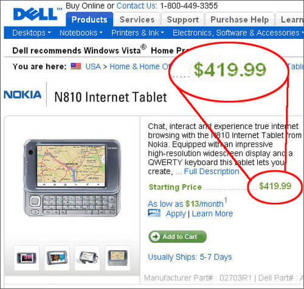

Author Archive for RogerS
Note: Links may not work or may take you to an archived page at the Internet Archive.
By RogerS December 17th, 2007
Categories: Internet tablet, Nokia N810 and general

Dell sells a lot of items it doesn’t make, including the Nokia N800
and N810 Internet Tablets. I haven’t seen a lower price for the N810
than this (screen captured on Dec.17): $419.99.
__________
Thanks to sideout for pointing us to Dell!
By RogerS December 17th, 2007
Categories: GPS, Internet tablet and Nokia N810
Over at SiliconValley.com, Dean Takahashi points out that GPS devices topped electronic sales on Black Friday, the big shopping day after Thanksgiving:
Two years ago, the devices that get their location fixes
from global positioning system (GPS) satellites cost $1,000. But the
cheapest ones now have broken the $100 barrier and many are now
competing on a variety of features. GPS devices were the No. 1
electronic purchase on Black Friday, up sixfold over last year in unit
sales. The average price was $189.
Another indicator of how useful people find location info, and
another point underscoring Nokia’s logic of incorporating GPS into the
Nokia N810 Internet Tablet.
By RogerS December 17th, 2007
Categories: Maemo, Nokia N800 and development
Not being Linux-born or -raised, I’ve stumbled and stopped several times in my Maemo development efforts.
So I was really glad to see Pete Savage’s how-to on setting up a Nokia N800 development environment at his blog, silentk::cbx33. It looks to have the right level of detail without being overwhelming.
I’m working on three projects right now — making a dictionary
extension that will work with microB, porting and Hildonizing XML Copy
Editor to the Internet Tablets, and attempting to get the OpenBerg
Lector extension to work with microB. I’ll post periodically on my
progress with these efforts.
In the meantime, thanks, Pete! Great timing for me!
By RogerS December 14th, 2007
Categories: phone
The wire services have a story
about a Canadian oilfield worker whose $10 unlimited browser plan with
Bell Mobility has resulted in $85,000 in charges for surfing and
downloading.
Silly guy. What part of ‘unlimited browsing’ made him think his plan enabled unlimited
internet use? Instead of reading the fine print in his contract, he was
set straight by his November bill of $60,000. Imagine the kind of
surfing luxury he got for $2000 a day!
Oh, sure, Bell has said it will let him off the hook for a mere
$3400. We all know what big hearts the telcoms have. They’re getting a
lot more than $80,000 worth of free publicity from that goodwill
gesture!
By RogerS December 13th, 2007
Categories: Nokia N800, Nokia N810, voip, walkaround web and webcam
The iPhone is Time magazine’s number one entry in its Top 10 Gadgets list (50 Top 10 lists of 2007 too).
Me, I prefer the Nokia Internet Tablet, but the iPhone is an understandable first choice.*
Neither the Nokia N810 (almost, sorta, but not really released) and the N800 (a big surprise way back in January!) merited a place on the list.
I’ve said it before:
With Skype cam calls, the internet tablet is a mind-blowing
culture-changing device. (It would easily supplant the cordless Skype
phone that’s number three on this list.) Think about it: walkaround
visuals on a voip call. Not tethered to a computer, not paying
exorbitant fees, not having to type a la IM, incredible display not a
tiny phone screen, not restricted to just what the vendor will let you
do. Like I said, mind-blowing.
Until then, it’s all potential, no paradigm-shift.
Knock, knock! eBay, Nokia, anybody there? What’s holding you up? Light the fuse, please.
__________
* This is what’s known in the writing business as understatement, a first-cousin of irony. I don’t think anyone stood in line for hours to be first to buy gadgets two through ten.
By RogerS December 12th, 2007
Categories: Hildon, Maemo and software
Nice post at wxBlog about Hildonizing wxGTK. Obviously, apps won’t be as small as using GTK natively, but it should make some ports more likely.
Since XML Copy Editor, the open-source XML editor I am fanatic
about, is built with wxWidgets, this might be a way to bring that
fabulous app to the Nokia Internet Tablet.
I don’t want to make the N8×0 my primary device, but being able to
edit when I need to without lugging around the laptop is one of the
NIT’s selling points.
I’ll post more about this as events develop with wxGTK.
Added later —
Andrea Grandi has some follow-up at Maemo Geek. He writes: “The result? I think that a screenshoot is better than thousand words :)”
By RogerS December 7th, 2007
Categories: GPS, Internet tablet and Nokia N810
I’ve
used the Nokia-branded external GPS with the N800 Internet Tablet, but
I pretty much only did that in the car and headed somewhere.
So I’m a bit mystified by the reports of poor GPS performance in the
N810. Some of these are for “I was moving around indoors” situations
which I never tried.
Here’s what promethh wrote yesterday in the ITT forums:
I can usually keep a 5-satellite lock on a bus or near a
building window. I can usually keep a 7-satellite lock when driving my
Xterra or Forester. Acquisition times when warm/hot (near/at last
location) have been 30sec-2min, and 2-6min when “cold” (unknown
location)
Um-m, up to 6 minutes to acquire one’s position? (OK, from 2 to 6 minutes.)
Is this something that can be improved by software? Or will it only
be fixed by a change to the hardware (eg, doing something with the
antenna)?
Or is this a non-problem that isn’t going to interfere with real-world GPS use?
By RogerS December 6th, 2007
Categories: GPS, Internet tablet and Nokia N810
Bloomberg News reports (in its entirety, via the San Jose Mercury News):
TomTom, the world’s largest maker of car-navigation
equipment, will use Google’s maps program so customers can send
addresses for shops and restaurants to their devices. Users can search
for business addresses through the Google Maps site and then send that
information wirelessly to a navigation device with a click of a button,
the Amsterdam-based company said Wednesday in a statement. Drivers can
then view that information on the device’s map and save it. TomTom is
adding features to stay ahead of rival Garmin.
I hadn’t thought about the advantage a device like the N810 Internet
Tablet has in this regard, with both Google Maps (or any map site) and
the GPS available in the same device.
But I guess a “send this address to the GPS” seems like a useful feature. What would it take for someone to work that up?
By RogerS December 5th, 2007
Categories: voip, walkaround web and webcam
The New York Times has a GPS focus in its Circuits section
today — ten articles about GPS devices, free-standing and built-in,
from accessories (solar panel charger) to innovative use (pet locator)
to data-tracker (think: where did I take this photo?).
Hundreds of column inches. Not a word on the Nokia N810 Internet Tablet, by the way.
One article describes
one family’s use of GPS in cellphones to help monitor their children’s
whereabouts. It mostly describes Sprint’s $10 monthly Family Locator
service (Verizon has something similar).
When Mr. Gray uses the service, he turns to his computer
and clicks on the Sprint Web site to locate either child. “Within about
a minute, an icon appears on a map showing where the phone is,” he said.
The story goes on to quote Charles S. Golvin, an analyst with
Forrester Research. The location services complement “one of the main
motivations adults have in giving their children cellphones — to get in
touch with them in an emergency.” And GPS ties into this because, he
notes, “it’s a comfort to have a bit more information.”
Parents may find an N810 a better present, if only because it
combines location and internet calling with a full range of computing.
And it seems to me that cam calls are bound to be more frequent and
more reassuring on an internet tablet than using the costly telecom
alternative.
By RogerS November 29th, 2007
Categories: general
There
probably aren’t many visitors to the itT site that need to look up
words in Khmer, Thai, Burmese or Lao. Especially since you can’t view
Unicoded web-pages in those languages on a Nokia Internet Tablet.
(Drat!)
But as I’ve noted my adventures in programming a Firefox extension here, I will point to my blog at the Khmer Software Initiative site, khmeros.info.
There, Click SEAlang beta 0.6.8 is officially announced. (Anyone can download it from SEAlang.net/download/.)
Without the work done to establish a Unicode version of Khmer,
without the beautiful Khmer Unicode fonts, without the evangelizing of
standards and open software in Khmer, without the literally millions of
“messages” translated to localize Firefox (Mekhala), Thunderbird
(Moyura), OpenOffice and openSUSE for Khmer users, all performed by
Khmer Software Initiative, there would be no use at all for the
dictionary extension I’ve worked on.
So I am glad to see today that KhmerOS has been selected as one of the nine finalists worldwide in the Stockholm Challenge
(one of the two finalists in the economic development category).
Recognition for this work is made by the Global Knowledge Partnership
(GKP), which promotes innovation and advancement in the acronymic areas
of K4D (Knowledge for Development) and ICT4D (Information and
Communication Technologies for Development). Congratulations to the developers at KhmerOS! You’ve done great work!
|
|
|